Introduction | Frogs 1 (AtCoder Educational DP Contest)
Lecture - 52
Introduction | Frogs 1 (AtCoder Educational DP Contest)
All right. So, welcome back to the second segment of the first module in week 10. Let us continue from where we left off in the previous segment.
(Refer Slide Time: 00:19)
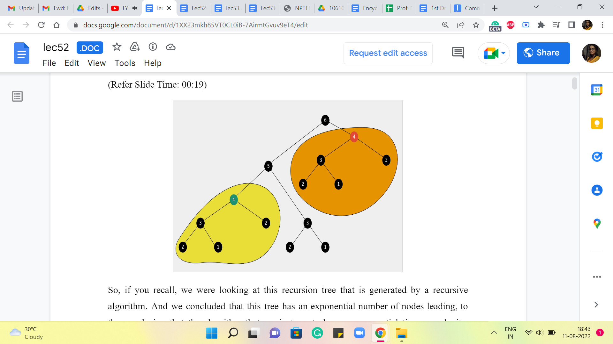
So, if you recall, we were looking at this recursion tree that is generated by a recursive algorithm. And we concluded that this tree has an exponential number of nodes, leading to the conclusion that the algorithm that we just wrote has an exponential time complexity because the time complexity is proportional to the number of function calls made. And that is what is depicted in this recursion tree. That is about as far as we got last time.
And what I asked you to do was to think about whether you can identify any redundancy of computation in this recursion tree, which will hopefully give us some way of saving some time. So, one thing that you may have noticed is that there are parts of this recursion tree that look exactly the same. In particular, for instance, if you look at this function call that is being made to 4 here, that looks rather a lot like the function call that was made to 4 earlier. And the information that we are getting out of these function calls is exactly the same.
So, this entire computation that is highlighted in orange is completely redundant because, by this time, you have already performed the exact same computations a few moments ago. When you went over the function calls that have been highlighted in yellow in this picture, there to the bottom left of your screen.
So, when you look at this picture, it seems like, we are being rather silly in redoing a lot of work that is already been done. So, the question to ask ourselves at this point is, is there any way that we can leverage the information that we have from computations that we have already done so that we do not have to do it again? And that is exactly the process or the strategy of memoization.
(Refer Slide Time: 02:06)


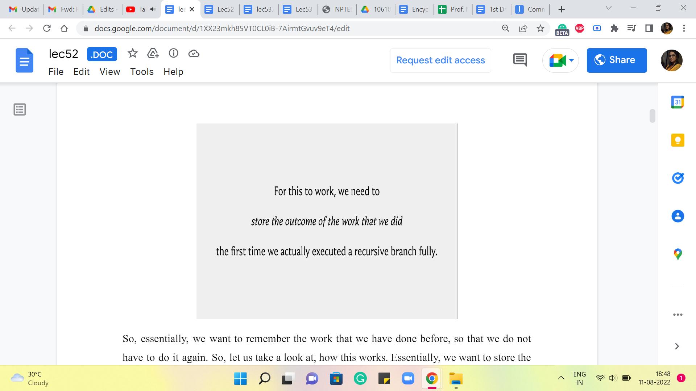
So, essentially, we want to remember the work that we have done before so that we do not have to do it again. So, let us take a look at how this works. Essentially, we want to store the outcomes of these prior function calls, so that at any point in time, whenever we have a recursive call, what we can do is really examine, if there is a need to go down the recursive rabbit hole prompted by this call.
The way we do this is, (to) check if the information that we would get by performing the recursive computation is already available to us. If it is already available to us, then we avoid the recursive call altogether. If it is not available to us that means, we are doing this operation or we are doing this computation the first time and it is okay to actually invoke the recursion.
So, notice that overall your algorithm is trying to track N pieces of information, where N is the number of stones that are there in the input that you are working with. So, to implement this in your program, what you would typically do is, declare an array, or a list, or a vector of size N, and use that to actually store the output of the recursive calls as you go along. So, let us take a look at how this would actually pan out in your program.
(Refer Slide Time: 03:20)
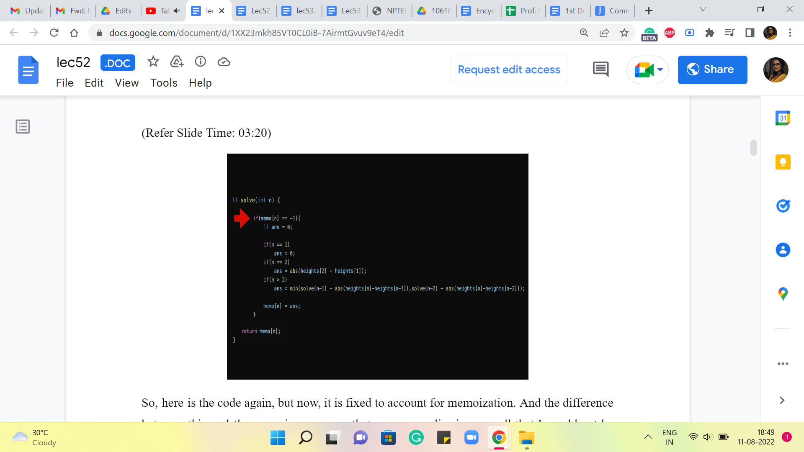
So, here is the code again, but now, it is fixed to account for memoization. And the difference between this and the recursive program that we saw earlier is so small that I would not be surprised if you did not even notice the difference from a quick glance. So, let me actually highlight the line that makes all the difference. It is this conditional statement here, which is basically saying, look, if you already know the answer, then you do not have to go through the process here. Okay. So, what we have done, behind the scenes in the sense that you do not see it on your screen right now, is we have initialized a memo array or a vector, where all the values by default are -1.
-1 in this problem is essentially a way of saying, we do not know the answer yet. If you are working with a problem, where the value -1 has some meaning or significance, then that is not a good value to initialize your array with. Basically, use some number, which has nothing to do with your problem, so that you can really use it as a code for saying I do not know yet. So, coming back to our program, here is what the code is doing for you. It is saying, okay, we want to know the answer for N. The first thing we do is check if we know this answer already. So, if the array value at N is something other than -1, that means, well, that is a déjà vu situation. We have already been here, we know, what the answer is.
(Refer Slide Time: 04:51)
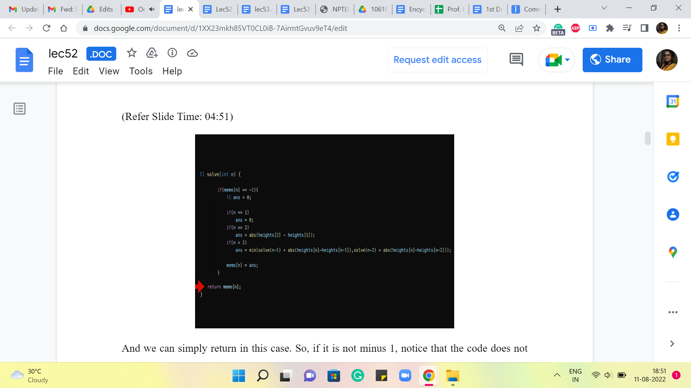
And we can simply return in this case. Okay. So, if it is not -1, notice that the code does not execute any of the recursive calls, it does not do any other work. It immediately returns the answer. On the other hand, if the array does report -1. That means that this is unknown territory, we do not know what is going on, and we do need to go down the recursion rabbit hole to figure out what the answer is going to be.
(Refer Slide Time: 05:22 and 5:47)


So, with this revised version of the recursive algorithm, let us take a look at what is going on in the recursion tree. So, notice that all of these function calls that have been highlighted here, will actually not execute in terms of recursion, but they will immediately return the answer. Because at the time that these function calls happen, the same computation has already been performed before, and the memo array is actually going to report an actual answer.
So, (all of these) all of this work in the recursion tree, basically, does not happen and is avoided. And your recursion tree will now essentially look like a linear path. Notice that this is really the leftmost sequence of executions. And once all of those are complete, as you walk your way back up to the root of the tree, there will be function calls, but they will all return immediately.
(Refer Slide Time: 06:16 and 06:57)


So, no new recursive instances will be spawned, and the total amount of work that is being done now is actually linear. So, I do hope that you find this as amazing as I do. I think a little bit of extra space and a couple of lines of code adjusted (for) can lead to really tremendous time savings. So, that is the impact of memoization.
And whenever you come up with recursive solutions, do watch out for the potential to memoize. What you really want is a situation where there is a lot of redundant work, so that you can find ways of avoiding it and saving yourself some time. So, we will have more to say about general principles in just a bit, but while we are at it.
Let us actually see how this algorithm plays out for the example that we started off with. So, we have the frog here, on the third stone, mainly because as we said for the first two stones we already know what the costs are going to be. These are the base cases. So, in the first stone, let me just recap that the cost we agreed would be 0. And on the second stone, the cost would simply be the absolute differences, the absolute difference between the heights of the first and the second stone. And in this example, that happens to be 20.
(Refer Slide Time: 07:28)

So, let us actually go ahead and make a note of this in the recursion tree as well. So these are the values that are returned by these two bottoms most function calls, which is where the work happens directly, and there are no further calls. So, these values are reported and pushed upstream to the calling function, which is trying to figure out, what is the answer, when there are three stones in the picture.
So, at this point, remember we are asking ourselves, how did you end up on the third stone? There are two possibilities, either you came in from the second stone, and that jump would have cost you 50, or you came in from the first stone, and that jump would have cost you 30. So, the final answer is the better of the two options between 50+20 and 30+0.
(Refer Slide Time: 08:16)
 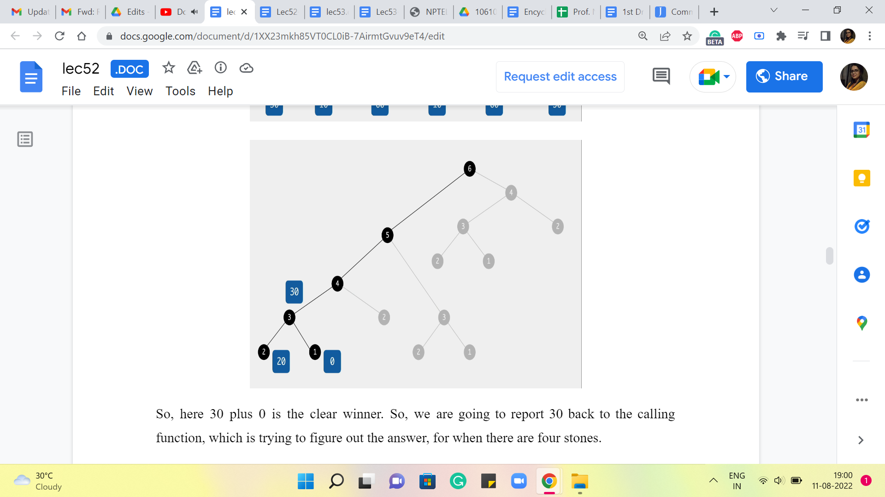
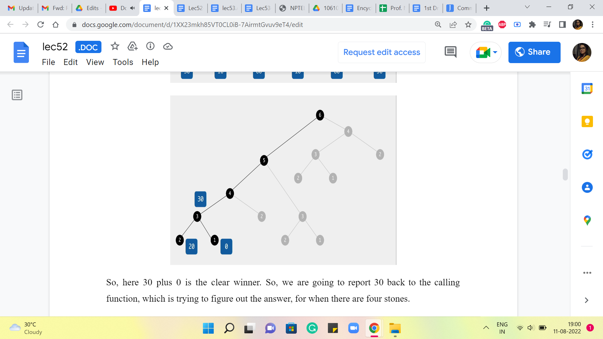
So, here 30+0 is the clear winner. So, we are going to report 30 back to the calling function, which is trying to figure out the answer, for when there are four stones.
(Refer Slide Time: 08:23)

 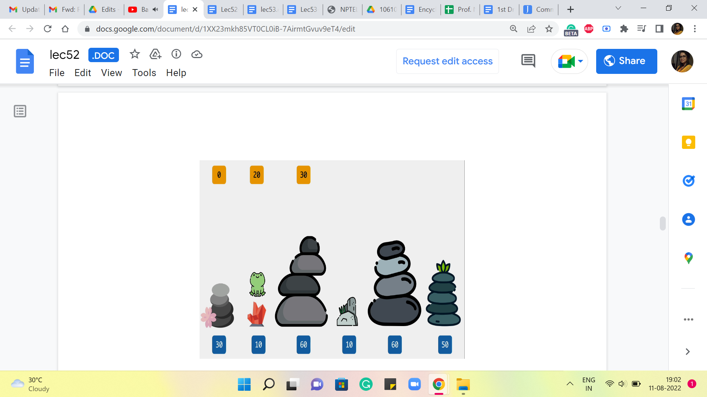
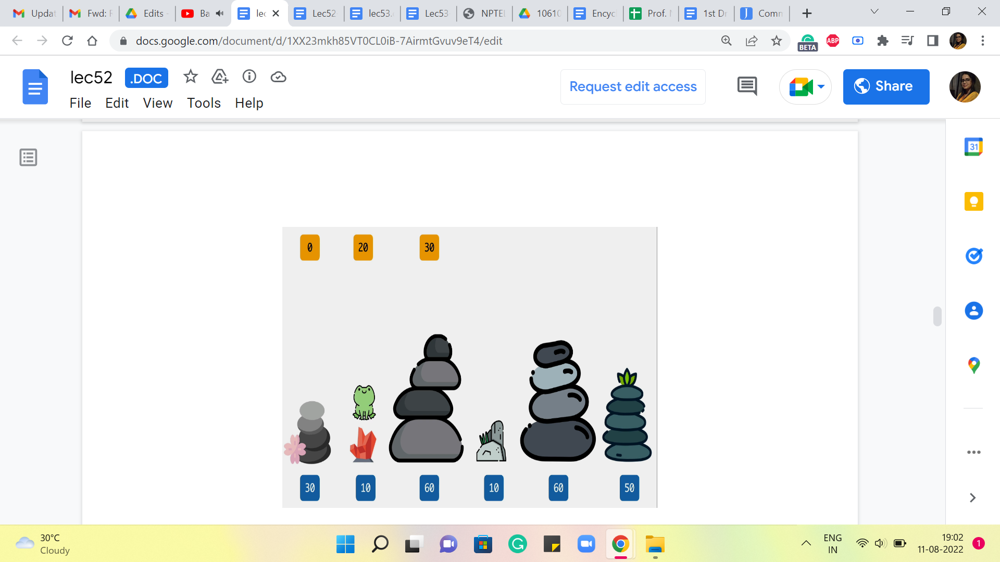
 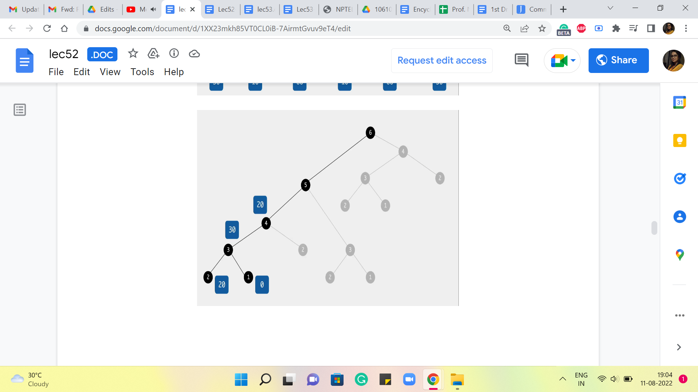
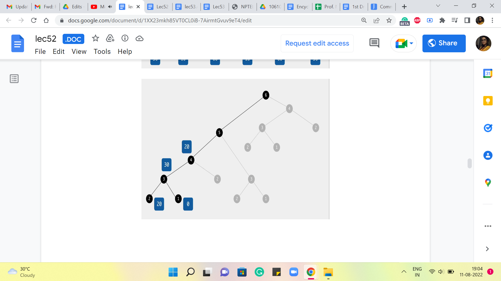
So, here again, what we are going to ask ourselves is, where did you come from? Did you come from the third stone or the second one? If you came in from the third stone, then the cost of that jump would have been 50, and the total cost would be 50+30, which is 80, versus if you came in from the second stone, then the cost of that final jump would be 0, and that gets tagged on to 20, so 0+20 is 20. So, clearly, the better of the two options here between 80 versus 20 is 20. So, we are going to record that as our final answer at this stage.
(Refer Slide Time: 09:05)


Now, let us go back to what is going on when we land up at the fifth stone. This is what we are trying to understand now, now that we have understood everything, up to the fourth one. So, how could you have come to stone number five? You could either come in from the fourth, which would have involved a cost of 50+20 to get to the fourth stone itself. So, that is 50+20, 70. Versus you could have come in from the third stone, and the cost of that jump would be 0. And the overall cost would be 30+0, which is 30.
(Refer Slide Time: 09:40)
 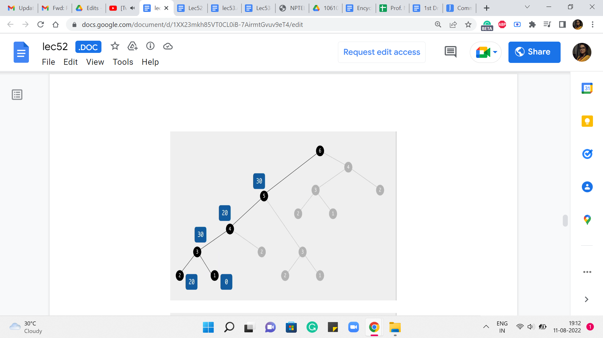
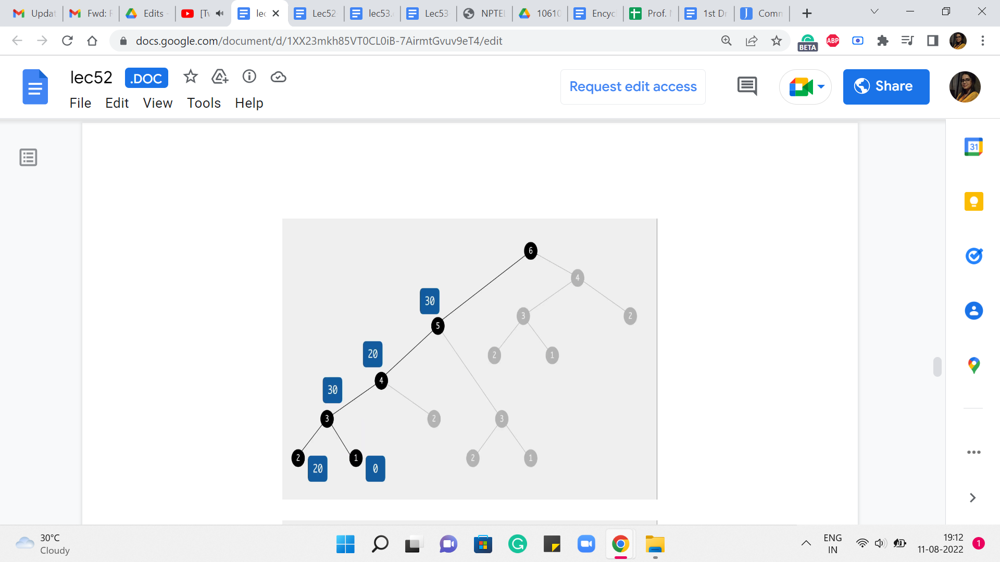 


So, you can see that 30 wins this round. And that is what we are going to keep track of as we move on to the final stone. And this is going to be our final answer. How did we land up at the final stone? Did we come from 5? In which case the last jump would have cost us 10 and the total cost would be 30+10, 40, or did we come from stone number 4? Where the cost of the final jump would already be 40 and 40+20, the total cost would have been 60.
(Refer Slide Time: 10:15)
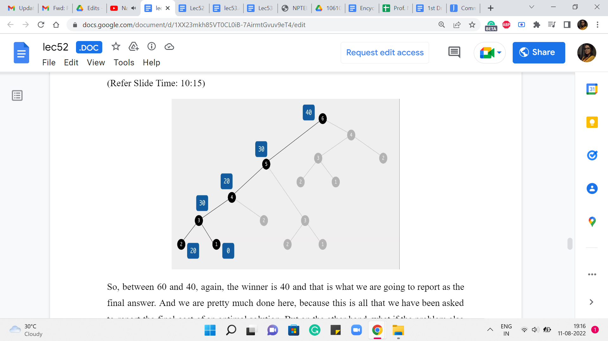
So, between 60 and 40, again, the winner is 40 and that is what we are going to report as the final answer. And we are pretty much done here because this is all that we have been asked to report the final cost of an optimal solution. But on the other hand, what if the problem also asked you to actually provide a sequence of jumps whose total cost matched the optimum that you are claiming? You might have already seen, as we worked through the example, a way to do this as well. So, all you would need to do is a little bit of extra bookkeeping to keep track of basically what drove your choices as you went along.
So, for instance, in the very last step, when we got to 40, we want to make sure we understand how we got to 40. So, the reason the answer was 40, was because we came in from stone number 5 with a cost of 10. And how did we get to stone number 5? Well, we got there from stone number 3 with a cost of 0. And how did we get to stone number 3? Well, we got there from stone number 1 with a cost of 30.
So, if you essentially just keep track of where you came from, by figuring out who won the comparison when you calculate the answer, just keep that extra piece of information. Then just like we often do by following parent pointers, you could essentially run a backtrace, to figure out, what choices led to this final conclusion.
And of course, when you are sharing your answer, you typically want to reverse the order so that the jumps happen in the sequence that they are supposed to happen. So, I think it is a fun exercise to modify the program that we have here so that it outputs one of the optimal sequences.
Notice that you are going to break ties arbitrarily, so which sequence you print, will depend on, how you have broken ties. But no matter which sequence you print, they will all be optimal. But your tie-breaking may be different from mine. So, the actual sequences we print may be different. And most judges, when they ask you for a sequence that is optimal, they will accept any valid sequence. So, they will typically run a check, to make sure that the cost of the sequence that you have printed actually matches the optimal cost and that is what they will care about.
Sometimes occasionally, you may have a requirement, which is along the lines of ‘print the lexicographically smallest optimal sequence.’ In this case, you have to fine-tune your tie-breaking, to prioritize the lexicographically better option at every step. So, these are some details that are worth keeping in mind.
I should say that this is a common feature of dynamic programming-based approaches, which is that by doing just a little bit of extra work, in terms of tracking the choices that you are making as you go along, you will be able to output, not just the optimum value, but also an actual solution that witnesses that value. So, I think this is a good thing to practice and get used to. Some people call this running a backtrace on your DP, and essentially, it is something that is useful in the competitive programming context because you are often required to actually produce a solution.
And just in case you are using dynamic programming-based approaches for solving real-world problems at work and so on, often, you are interested in an actual solution, not just a value. So, do keep that in mind, and let us move on to making some general remarks about how dynamic programming-based approaches typically work, summing up some of what we have seen even just through this very introductory example.
(Refer Slide Time: 13:51 and 14:47)


So, you can broadly think of dynamic programming as being memoization on top of recursion. So, you come up with a recursive approach to solving your problem, and you make it efficient by memoizing it like we did. I would say that usually the memoization part, at least in terms of implementation, is usually routine. You just have to figure out how to allocate space to the answers that you are interested in and make sure that you just modify your recursive subroutine so that there is that initial check for whether we really need to do this or not. Okay.
But what enables you to do memoization is, coming up with a recursive algorithm that has enough redundancy built into it so that the memoization is eventually useful. So, usually, the heart of the problem is in coming up with a recursive approach to solving the problem. That is appropriate for memoization going forward.
So, to come up with a recursive solution, again, there is no formula and every problem is going to be different. But typically, the mindset, with which you want to think about recursive patterns, is to see how best you can break up your problem into natural sub-problems. And again, as you practice more and more problems, you will begin to get a sense of, how people typically chop up problems into smaller pieces.
Sometimes for array- or sequence-based problems, you are either looking to chop things off from the end or the beginning or even some subsection in the middle. Sometimes your pieces may have to be subsets of some collection of elements. If you are working with graphs, say, for instance, you are working with a tree, then natural subproblems are typically subtrees that you obtain when you delete some root vertex. So, you try to figure out the answer at all of these subtrees and then somehow see if you can piece them together.
So, normally when you are doing recursion with the hope of memoizing going forward, you want your recursive sub-instances to actually have enough overlap so that you can leverage that overlap to save yourself time. You also want the pieces to be useful in the sense that you want your answer to be in some way a function of the pieces that you develop. Like we did for the frog problem, the two pieces that we solved were directly helpful in finding our final answer.
And we also had substantial overlap as we just saw and that helped us eliminate a lot of the exponential part of the search space. This is one of the reasons, why some people think of dynamic programming as being essentially clever Brute-Force because when you first write own your recursive approach, it is practically a Brute-Force approach. It is exhaustive, and its correctness is easy to prove because it is exhaustive. But then after that, you take a closer look and you identify all of this redundancy and you memoize and that is going to save you a whole lot of time.
(Refer Slide Time: 16:48)

So, this process of doing dynamic programming is usually called top-down dynamic programming, which is essentially you start by solving the problem at the top. That is the original problem. So, you start off by invoking solve of n or something like this. And this is essentially recursion. But we save the day with the modification that allows us to save time by using space, essentially.
So, when you write your dynamic programming solutions in this style, one advantage is that you are essentially building off of the recursive paradigm in a small way. So, it is really your recursive code with some small but important tweaks. So, if you are somebody who is already used to writing recursive programs then there is not much additional work to do to elevate it to the status of being an efficient dynamic programming-based solution.
Also, the other nice thing is that you only compute what you need based on the recursive calls that actually happen. You will probably appreciate this more when you see the contrast with the bottom-up approach, which is something that we are going to discuss next. And I think one of the reasons it is worth knowing a different way of really implementing the same thing, is because the other style which is the bottom-up style is sometimes cleaner from the point of view of memory optimizations.
So, if you wanted to save some space, then it is sometimes easier to do when you visualize this whole thing as a table that you are filling out, as opposed to this stack of recursive calls that are being made and that are doing their thing. They are really doing the same thing behind the scenes. It is just a different way of implementing the same idea.
So, we are going to continue this conversation in the next module, where we look at a different problem and we are going to implement it using the so-called bottom-up approach. And I would suggest that for both problems, you do the implementation in the other style, the one that has not been given just to get some practice. I think it is a good idea to be flexible about which style you use, because, in certain situations, one may have a small advantage over the other.
Although it is true that most people have sort of their preferred default styles when it comes to dynamic programming. And they would only switch if there was a specific need to switch from the point of view of a certain kind of optimization and so on. So, as I just said before, I think it is a good idea to at least be aware of both the styles and be reasonably comfortable implementing a given solution in either of these styles because that may be something that is useful in a specific situation.
Having said that in the early stages, most elementary dynamic programming-based problems are such that this choice should not really matter. So, if you find one style much more intuitive or natural than the other one. It is perfectly fine to just stick to that for now. Let us continue this conversation in the next module, where we will use another introductory example to exemplify the style of bottom-up dynamic programming!